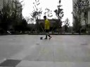
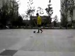
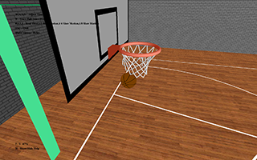

My Freestyle 1
My Freestyle 2

My Freestyle 3
My Freestyle 4
My Freestyle 5

M4A1
|
My Freestyle 1 |
My Freestyle 2 |
 My Freestyle 3 |
My Freestyle 4 |
My Freestyle 5 |
M4A1 |
 |
A retriever UI based on SIGGRAPH 2012 paper Sketch-based Shape Retrieval.(Click here to download executable) |
|  | A basketball shooting game, based on a simple physics engine I developed. (Click here to download executable) |